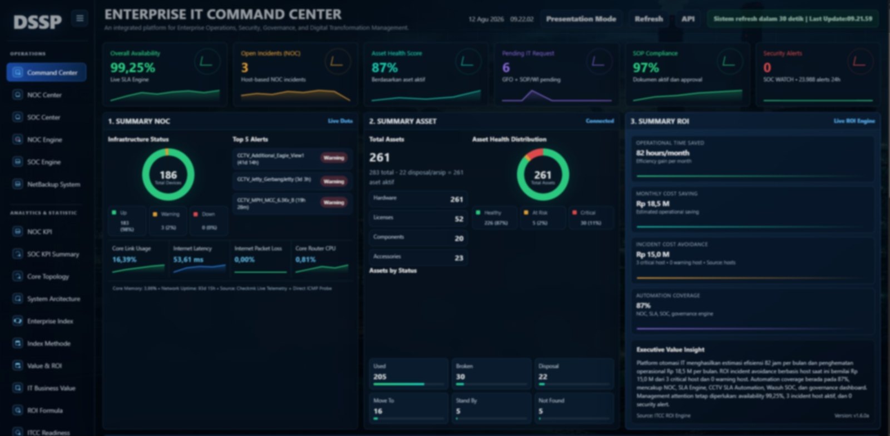
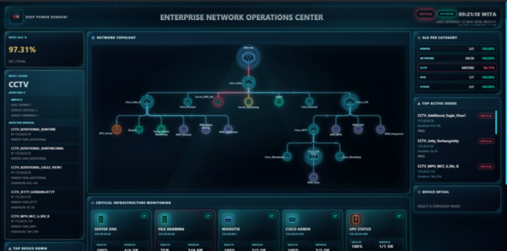
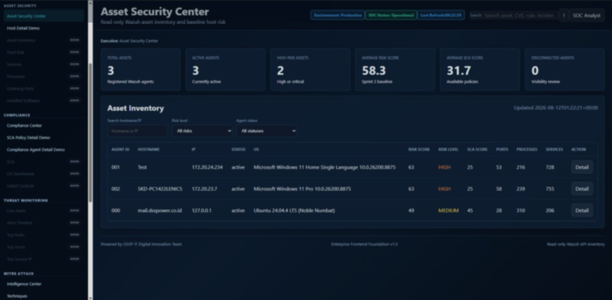
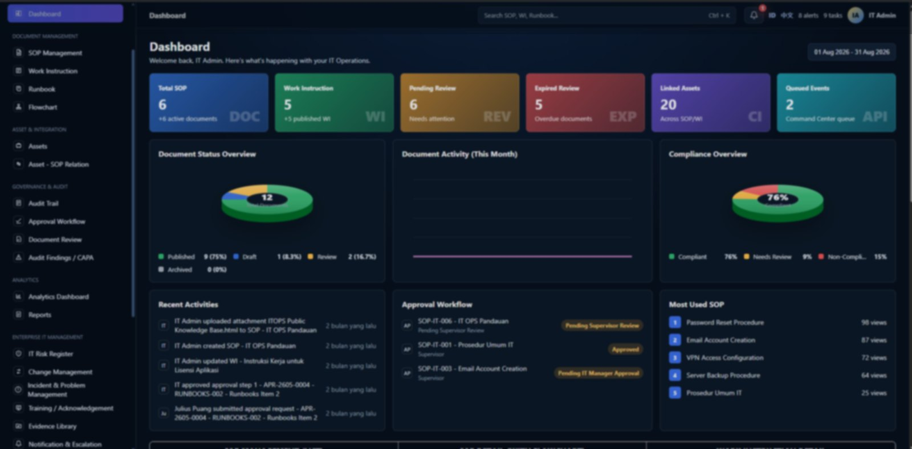
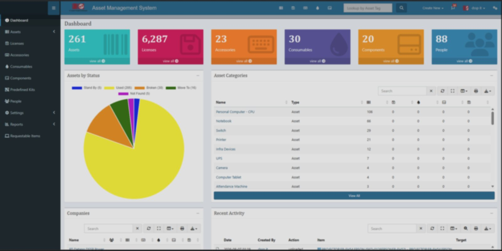
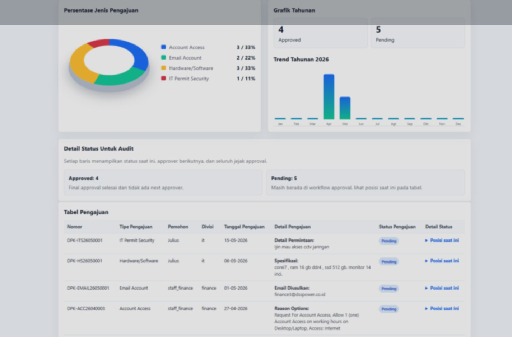
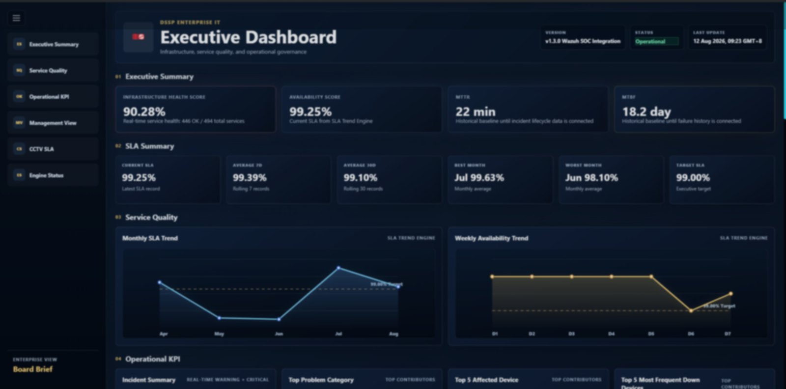
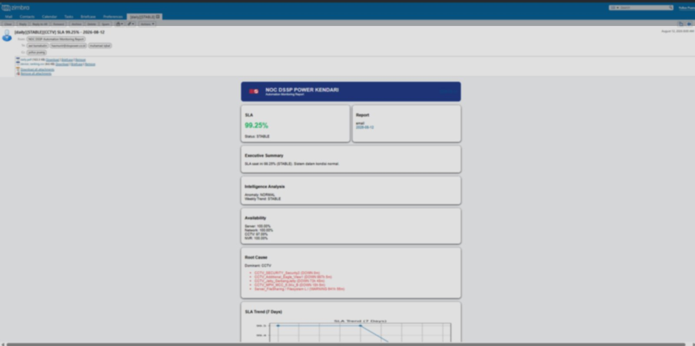
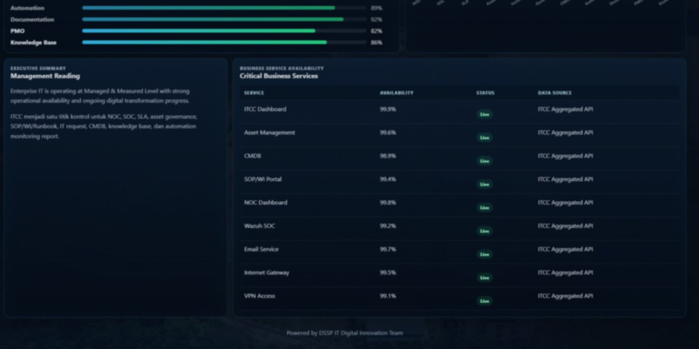

Turning industrial IT into reliable, governed and decision-ready services.
IT Professional with 12+ years of professional experience across 24/7 healthcare, nickel smelter and power generation environments. I combine hands-on infrastructure and application depth with IT Service Management, governance, automation, cybersecurity visibility and executive performance management.
From cost center to operational business partner.
My management approach is to make IT services visible, measurable, controlled and continuously improved — so technology decisions can be discussed in the language of availability, risk, efficiency, continuity and business impact.
How I frame industrial IT
Technology is an enabler. The management objective is dependable service delivery for business-critical operations.
Integrated IT operating model
Availability, events, health, risk.
Triage, restoration, RCA context.
Standard execution and knowledge.
Lifecycle, access and approvals.
Reduce recurring effort.
Performance and attention.
Management prioritization.
Integrated IT Command Center
Initiated, designed and implemented as a management control layer for site IT operations — integrating infrastructure monitoring, security visibility, governance, assets, service requests, automation and executive KPI into one operating ecosystem.

From fragmented tools to one management view.
The objective is not another dashboard. The objective is an operating system for IT management: detect conditions, understand impact, standardize action, control assets and requests, automate recurring work, measure performance and present decision-ready information.








Technology translated into management outcomes.
IT value becomes more credible when technical activity is expressed as reliability, control, efficiency, risk reduction and better decisions.
Service assurance
Move reporting from device status to service availability, critical infrastructure condition and SLA trend.
Automation with measurable effort reduction
Reduce manual reporting effort and improve consistency of operational information.
Controlled execution
SOP, approvals, asset lifecycle, requests and audit evidence reduce person-dependent operations.
Faster management attention
NOC and SOC context expose what is affected, how long and when escalation is required.
Lifecycle & prioritization
Asset and service data strengthen replacement planning, technical evaluation and budget prioritization.
Executive translation
Convert operational telemetry into SLA, KPI, trend, risk and management-attention indicators.
ITSM Manager · KKNI Level 7
My BNSP competency is positioned as a management framework; the Integrated ITCC provides practical evidence of how those competencies are applied to real 24/7 operations.
IT Service Manager
KKNI Level 7
Competency areas cover problem resolution, incident management, configuration management, change management, hardware architecture, system operational support, access authorization and escalation management.
12+ years in mission-critical 24/7 environments.
The common thread across my career is operational continuity: technology supporting services and industrial processes that cannot simply stop.
Site IT Lead
Lead site IT operations, infrastructure reliability, business applications, governance, IT asset management, vendor technical evaluation, budget planning, cybersecurity visibility and executive reporting. Initiated and implemented the Integrated ITCC ecosystem.
Industrial Digitalization & Business Applications
Built and supported operational applications across supply chain, ore supply, export-import, procurement, logistics, warehouse and IT asset processes, improving workflow visibility and process control.
Healthcare Digital Transformation
Coordinated and developed hospital information-system implementation across clinical, administrative, finance, insurance and external integration workflows, supporting multi-department adoption and data governance.
Hands-on enough to understand risk. Strategic enough to manage outcomes.
Technical depth supports management judgment — it is not the headline.
Technology is the enabler — not the headline.
Engineering depth allows me to validate solutions, challenge vendors and implement improvement with practical understanding.
Formal competency supported by continuous learning.
Only credentials that reinforce the industrial IT operations, architecture, automation and asset-governance narrative are highlighted.
Industrial IT Operations & Digital Transformation Leadership
Interested in leadership roles where IT is expected to protect operational continuity, strengthen governance, improve service performance and act as a business partner — particularly in power, energy, mining, smelter, petrochemical, manufacturing and other 24/7 industrial environments.